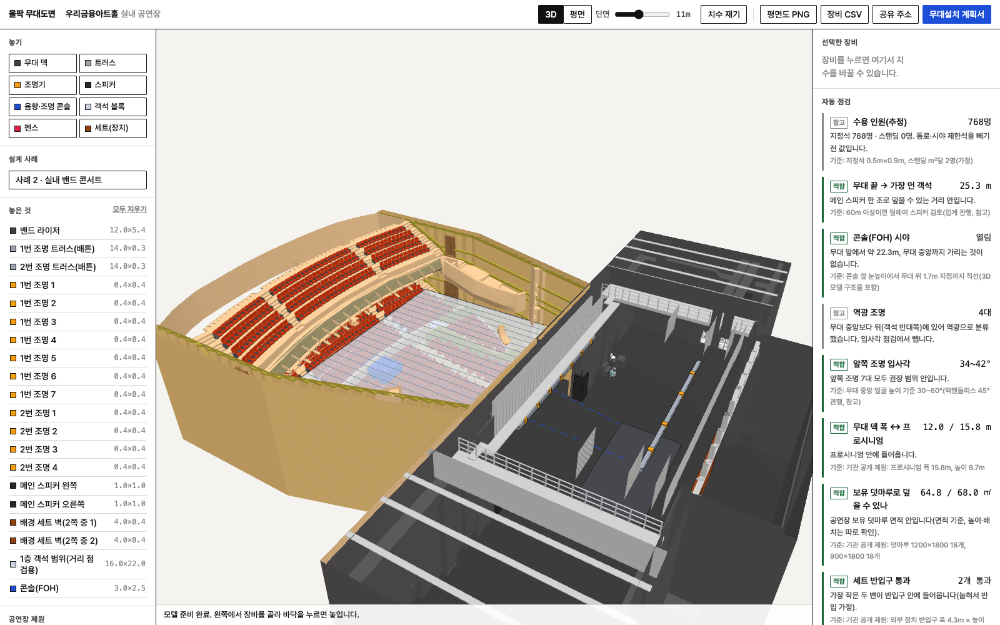
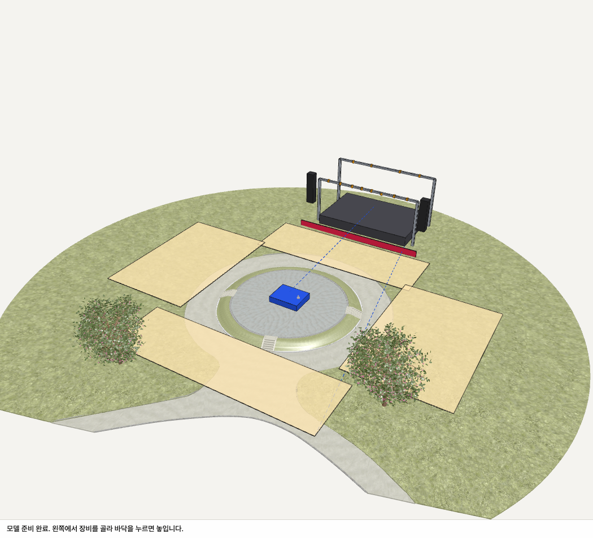
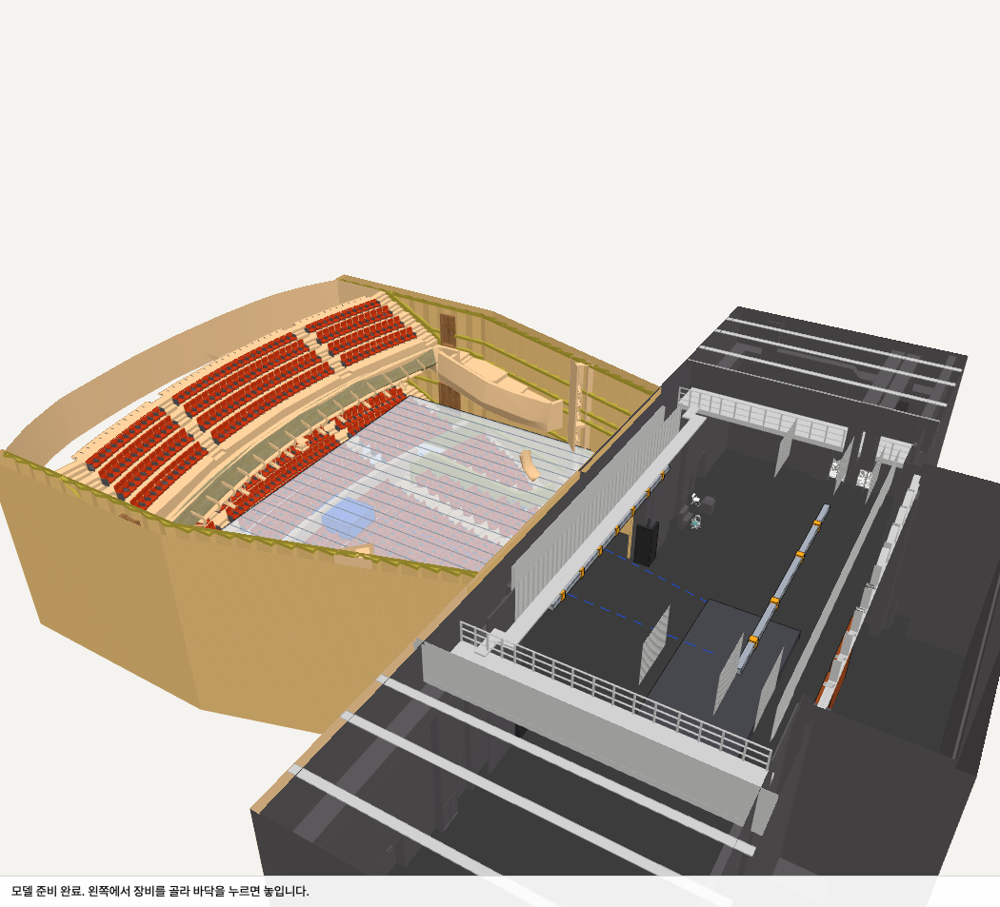

올림픽공원에서 공연을 올리는 사람을 위한 도구
한국체육산업개발이 공개한 공연장 3D 모델 위에 무대 덱·트러스·조명·스피커·객석을 놓고, 기관이 공개한 무대 제원으로 바로 점검합니다. 평면도와 무대설치 계획서(서식 제7호) 초안까지 브라우저에서 뽑습니다. 가입·설치·비용이 없습니다.

KSPO DOME·티켓링크 라이브 아레나·수변무대도 기관이 3D 모델을 공개했습니다. 같은 방법으로 추가할 수 있습니다(모델 변환 스크립트 공개).
실제 공연 의뢰가 아니라 공개 자료로 세운 가정 조건입니다. 눌러서 열면 그대로 고쳐 볼 수 있습니다.

무대 18×12m를 입구 반대편 가장자리에 두고, 콘솔은 가운데 원형 광장(주변보다 약 0.9m 높음)에 놓았습니다. 무대 끝에서 가장 먼 관객까지 48.7m로 딜레이 스피커 없이 메인 한 조로 덮는 거리, 콘솔 시야는 열림, 앞쪽 조명 8대 입사각 30~50°(뒤 트러스 4대는 역광으로 분류).

라이저 12×5.4m(64.8㎡)는 공연장 보유 덧마루 68.0㎡ 안, 프로시니엄 15.8m 안. 배튼 두 개에 건 조명 트러스는 392kg·296kg으로 허용 하중 750kg 안. 배경 세트 벽 두 쪽(각 4.0×4.2m)은 반입구(4.3×2.9m)를 통과합니다.
| 항목 | 계산 | 기준 |
|---|---|---|
| 무대 덱 폭 ↔ 프로시니엄 | 덱 가로 길이 | 기관 제원 우리금융아트홀 프로시니엄 15.8m |
| 보유 덧마루로 덮을 수 있나 | 덱 면적 합 | 기관 제원 1200×1800 18개 + 900×1800 18개 = 68.0㎡ |
| 세트 반입구 통과 | 세트의 가장 작은 두 변 | 기관 제원 외부 장치 반입구 4.3×2.9m |
| 배튼 하중 | 트러스 위 조명 무게 + 트러스 자중 | 기관 제원 세트 배튼 허용 750kg, 길이 20m |
| 콘솔 시야 | 콘솔 눈높이 → 무대 위 1.7m 직선이 장비·3D 모델 구조물에 걸리는지 | 계산 걸리면 부적합 |
| 무대 끝 → 가장 먼 객석 | 객석 블록 모서리까지 평면 거리 | 관행 60m 넘으면 딜레이 스피커 검토 |
| 앞쪽 조명 입사각 | 조명 → 무대 중앙 얼굴 높이 각도(역광 제외) | 관행 30~60°(맥캔들리스 45°) |
| 공연일과 겹치는 등록 행사 | 계획서에 적은 공연일 ↔ 같은 공연장 공개 행사 기간 | 기관 데이터 대관·공연정보 목록. 겹치면 확인, 없어도 대관 가능 여부는 기관 확인 |
| 수용 인원 | 블록 면적 | 가정 지정석 0.5×0.9m, 스탠딩 ㎡당 2명 |
| 데이터 | 쓰임 | 받는 방법 |
|---|---|---|
| 올림픽공원 공연장 실감형 콘텐츠 공공데이터포털 15127487 | 공연장 3D 모델(GLB) | 기관 누리집 대관&시설자료에서 받아 웹용으로 줄임. 우리금융아트홀 170MB → 8.4MB, 88잔디마당 10.9MB → 4.9MB |
| 올림픽공원 대관정보·공연정보 공공데이터포털 15015212 · 3037877 | 공연장별 대관 이력, 예정 공연, 공연일 겹침 점검 | 포털이 연결한 기관 공연·행사 화면의 공개 목록. 하루 한 번 자동 수집() |
| 우리금융아트홀 무대운영 자료 | 프로시니엄·배튼·반입구·덧마루 점검 기준 | 기관 누리집 대관&시설자료 「무대운영」 문서의 숫자를 그대로 옮김 |
| 무대설치 계획서 서식 제7호 | 계획서 초안 항목 | 기관 누리집 대관&시설자료 「무대설치 계획서」 |
| 항목 | 있으면 가능해지는 점검 |
|---|---|
| 배튼별 위치(무대 앞에서 거리) | 트러스를 실제 배튼에 맞춰 놓기, 배튼 번호로 장비 목록 정리 |
| 공연장별 전기 용량·분전반 위치 | 조명·음향 소비 전력 합계 점검, 발전차 필요 여부 |
| 야외 공연장 차량 반입 경로 폭·하중, 잔디 보호 기준 | 88잔디마당 무대 트럭 진입·잔디 보호재 면적 계산 |
| 시간대별 소음 기준 | 스피커 방향·출력 계획 |
| 대관 가능일(빈 날짜) | 설계와 대관 문의를 한 화면에서 |